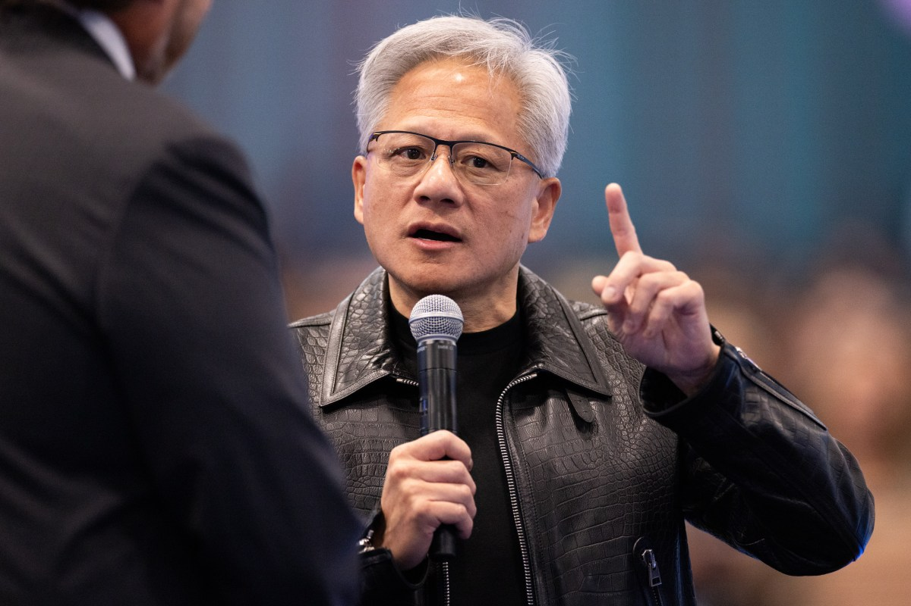

8 ноября совет директоров NVIDIA опубликовал короткое заявление: он начинает независимое расследование «в свете недавних публикаций о том, что основатель и гендиректор Дженсен Хуанг стал целью иностранной разведывательной операции». Расследование будет вести комитет независимых директоров с привлечением внешних юристов. Совет подчеркнул приоритет национальной и экономической безопасности США, но сразу оговорился: признаков того, что госсекрет или коммерческие тайны NVIDIA пострадали, пока нет — при этом проверке подвергнут «всю доступную информацию». Хуанг расследование полностью поддерживает, совет выразил ему доверие.
В тот же день глава компании разослал сотрудникам письмо, полный текст которого опубликовал The Verge. Хуанг признал личную измену: «Я обязан извинениями своей семье и всем вам. Я был неверен жене. Мои действия причинили боль ей и нашим детям. Оправдания тому, что я сделал, нет». Он также добавил, что «не соответствовал» своей ответственности перед компанией, а коллеги, партнёры и акционеры «заслуживают от меня большего».
Речь в публикациях идёт об Элис Хуанг, бывшем руководителе сингапурского чип-мейкера Megaspeed. Как передают TechCrunch и The Verge, циркулировавшая ранее среди американских политиков записка приписывает ей вербовку министерством госбезопасности КНР с целью слежки за главой NVIDIA. Ни в официальном заявлении совета, ни в записке Хуанга фамилий нет — все детали про «агента» остаются версией СМИ без независимого подтверждения именно в этой части. Именно это и должно разобрать расследование комитета.
NVIDIA — самый чувствительный узел всей индустрии ИИ-чипов, а её совет впервые так явно выносит вопрос иностранного разведывательного влияния на уровень официального коммюнике для инвесторов. Для отрасли сигнал двойной: во-первых, операции по влиянию на руководителей ключевых технокомпаний перестали быть сюжетом спецслужб и стали сюжетом корпоративного управления; во-вторых, даже при отсутствии подтверждённой утечки сам факт подозрения теперь запускает процедуру независимого аудита на уровне совета директоров.